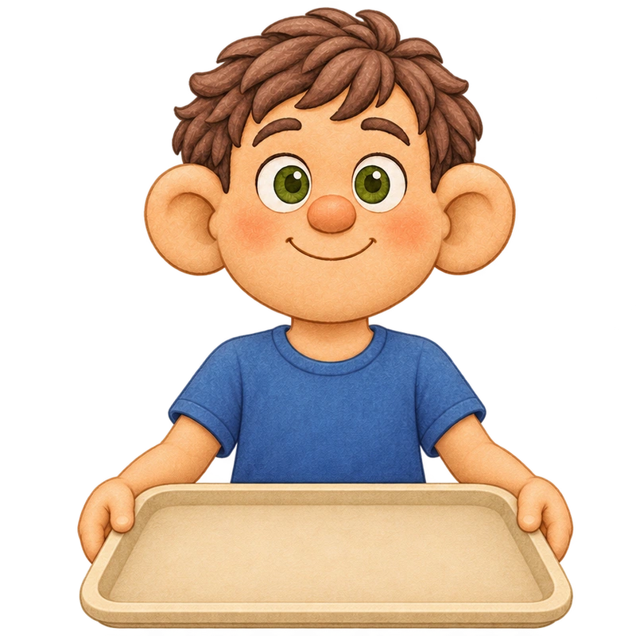
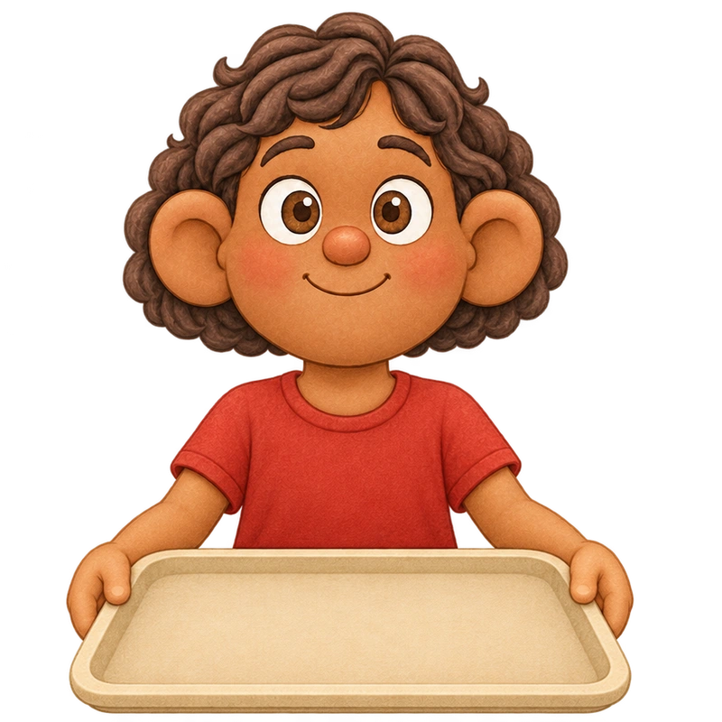

Un peu, beaucoup… ou pas du tout ?
Écoute, observe et prépare une salade à ton goût.


Deux défis guidés et une activité à l’oral en classe.
Écoute et observe
Écoute, observe et prépare une salade à ton goût.


Deux défis guidés et une activité à l’oral en classe.